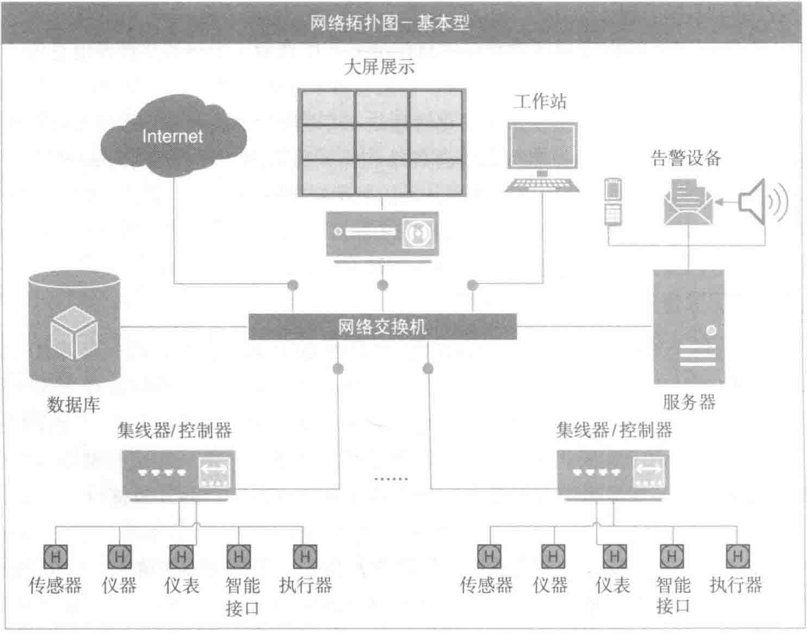

（Item）三类对象，从OPC服务器中获取数据，通过服务器对象接口枚举服务器端定义的所有数据项，将要操作的数据项加入客户端自定义组对象中，通过组对象对数据项进行数据的读写操作。
数据中心智能化系统中的一些子系统（如楼宇自控系统、安全防范系统等）可通过OPC接入系统平台。
6. 网络结构
上述不同的通信协议和接口在传输时，需要组建一个专用的通信网络。前端采集网络通常是由总线型和星型组成的混合型网络结构，各类传输线缆需要连接到集线器或协议转换器上，转换成TCP/IP协议后接入LAN或WAN。
在设计智能化系统的网络结构时，应根据数据中心不同的应用等级和具体用途来架构网络模型。以下是几种常见的网络拓扑结构。
（1）基本型
基本型的网络拓扑结构主要用于C级数据中心。它的前端采集网络和系统局域网由一套布线系统组成。它满足系统的基本功能要求，对系统的安全性和可靠性要求不高。基本型的网络拓扑结构如图6-2所示。
